<!DOCTYPE html>
<html>
  <head>
    <title>26 11 000 Removing and Installing Propeller Shaft (Inserted) Completely — 2011 BMW 128i Coupe (E82) L6-3.0L (N52K) Service Manual | Operation CHARM</title>
    <meta name='description' content="Detailed repair manual for the 2011 BMW 128i Coupe (E82) L6-3.0L (N52K).">
    <link rel='stylesheet' href="../style.css">
    <meta name='viewport' content='width=device-width, initial-scale=1.0' />
  </head>
  <body>
    <div class='theme-colors header'>
      <div class='branding'><b>Operation CHARM</b>: Car repair manuals for everyone.</div>
<div class=breadcrumbs><a class='breadcrumb-part' href="../">Home</a> <b>&gt;&gt;</b> <a class='breadcrumb-part' href="../BMW/">BMW</a> <b>&gt;&gt;</b> <a class='breadcrumb-part' href="../BMW/2011/">2011</a> <b>&gt;&gt;</b> <a class='breadcrumb-part' href="../index.html">128i Coupe (E82) L6-3.0L (N52K)</a> <b>&gt;&gt;</b> <a class='breadcrumb-part' href="0.html">Repair and Diagnosis</a> <b>&gt;&gt;</b> <a class='breadcrumb-part' href="0.html#Transmission%20and%20Drivetrain/">Transmission and Drivetrain</a> <b>&gt;&gt;</b> <a class='breadcrumb-part' href="0.html#Transmission%20and%20Drivetrain/Drive%2FPropeller%20Shafts%2C%20Bearings%20and%20Joints/">Drive/Propeller Shafts, Bearings and Joints</a> <b>&gt;&gt;</b> <a class='breadcrumb-part' href="1252.html">Drive/Propeller Shaft</a> <b>&gt;&gt;</b> <a class='breadcrumb-part' href="1252.html#Service%20and%20Repair/">Service and Repair</a> <b>&gt;&gt;</b> <a class='breadcrumb-part' href="10244.html">26 11 000 Removing and Installing Propeller Shaft (Inserted) Completely</a></div></div>
<div class="theme-colors floaty-message lemon-message">
  <b style="font-size: 1.5em; color: gold">Manuals through 2025 now available!</b>
  <br><br>
  Our trusted friends have launched a new website named LEMON, which has newer manuals. It also contains all the CHARM manuals.
  <br><br>
  LEMON is the spiritual successor to  CHARM, I recommend you try it!
  <br><br>
  Link: <a style='white-space: nowrap' href="../missing-page">lemon-manuals.la</a> or <a style='white-space: nowrap' href="../missing-page">lemon-manuals.org.ua</a>
  <br><br>
  (Some people have issue connecting. LEMON is investigating. For now, use Firefox or change your DNS server)
  <br><br>
  Or, hide this message: <a href="../missing-page">temporarily</a> or <a href="../missing-page">permanently</a>
</div>
<div class='main'>
<h1>26 11 000 Removing and Installing Propeller Shaft (Inserted) Completely</h1><br><br><b>26 11 000 Removing And Installing Propeller Shaft (Inserted) Completely</b><br><br><b>Special tools required:</b><br><br><br><div class='oxe-image'></div><br><br><br><br><br><b>IMPORTANT:</b><br>Replacement of the sunk nut on the rear axle final drive is absolutely required.<br>The sunk nut already has a screw locking.<br>After the propeller shaft has been screwed into the rear axle final drive (sunk nut), a hardening time of at least 2 hours is absolutely necessary.<br>The hardening time may be extended at lower temperatures.<br>Failure to comply with these instructions may cause serious damage.<br><br><br><div class='oxe-image'></div><br><br><br><br><br><b>Necessary preliminary tasks:</b><br><span class='indent-2'>&#09;</span>-<span class='indent-5'>&#09;</span>Remove complete exhaust system.<br><span class='indent-2'>&#09;</span>-<span class='indent-5'>&#09;</span>Remove underbody protection with holders.<br><span class='indent-2'>&#09;</span>-<span class='indent-5'>&#09;</span>Remove heat shields.<br><br><br><div class='oxe-image'>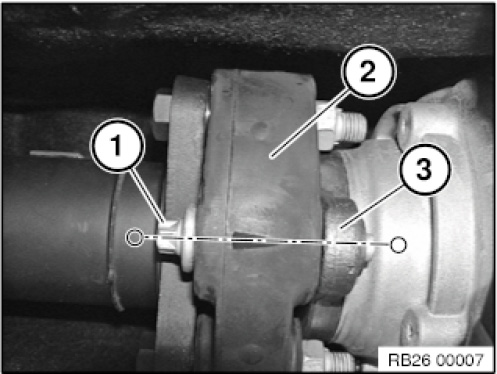</div><br><br><br><br><br><b>IMPORTANT:</b><br>To avoid buzzing sound after refitting the propeller shaft:<br><span class='indent-2'>&#09;</span>1.<span class='indent-5'>&#09;</span>The flexible disc connection (1) on the front at the propeller shaft must be marked in one plane with the flexible disc (2) and the three-bolt flange (3) before removal.<br><span class='indent-2'>&#09;</span>2.<span class='indent-5'>&#09;</span>During installation the three-bolt flange (3) must be forced back together again with the flexible disc (2) in the same position.<br><br><br><div class='oxe-image'>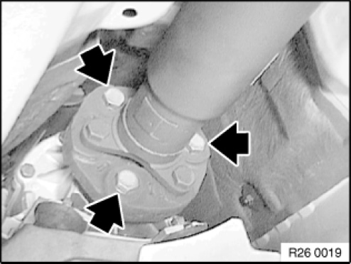</div><br><br><br><br><br>Release screws.<br><br><b>Installation note:</b><br><span class='indent-2'>&#09;</span>-<span class='indent-5'>&#09;</span>Replace ZNS bolts and self-locking nuts.<br><span class='indent-2'>&#09;</span>-<span class='indent-5'>&#09;</span>Grip mounting bolts of flexible disc at nuts and tighten down by way of bolts.<br><br><br><div class='oxe-image'>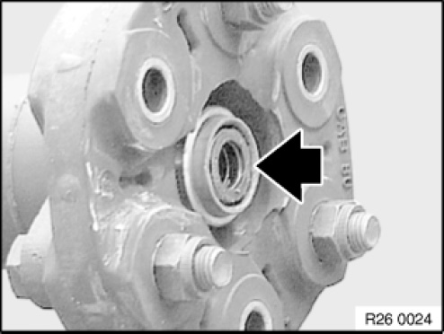</div><br><br><br><br><br><b>Installation note:</b><br>Check centring mount.<br>If necessary, replace damaged centring.<br>Grease centring mount.<br><span class='indent-2'>&#09;</span>-<span class='indent-5'>&#09;</span>Grease: BMW Service<br><span class='indent-5'>&#09;</span>Operating Fluids.<br><br><br><div class='oxe-image'></div><br><br><br><br><br>Installation note:<br>Tighten down screws/bolts to specified torque.<br>Secure angle of rotation special tool 00 9 120 with magnets 00 9 130 to vehicle underbody and screw down further according to angle of rotation.<br>Tightening torque 26 11 1AZ.<br><br><br><div class='oxe-image'>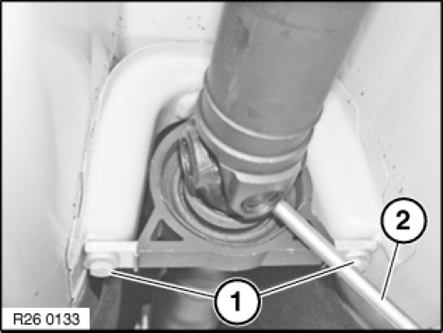</div><br><br><br><br><br>Slacken screws (1)<br>Tightening torque 26 11 6AZ.<br>Using a suitable tool (2), secure propeller shaft at centre universal joint against turning.<br>Remove screws of centre mount fully only after opening insert nut.<br><br><br><div class='oxe-image'>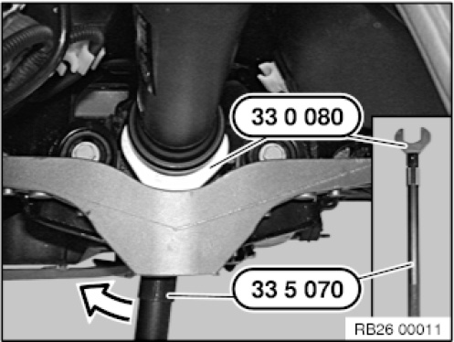</div><br><br><br><br><br>Release insert nut against direction of travel in clockwise direction with special tool 33 0 080 and 33 5 070.<br>Tightening torque 26 11 1AZ.<br><br><b>IMPORTANT:</b><br>The bi-hexagonal flange nut must not be used for bracing.<br>Failure to comply with this instruction may result in serious damage to the rear axle final drive.<br><br><br><div class='oxe-image'>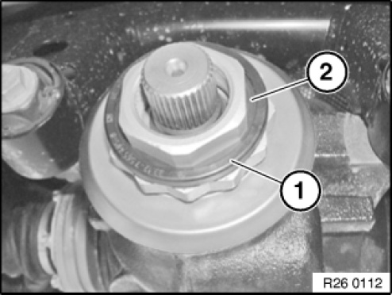</div><br><br><br><br><br>Remove retaining clip (1) and gasket (2).<br><br>Installation note:<br>Retaining clip and gasket must be replaced.<br><br><br><div class='oxe-image'>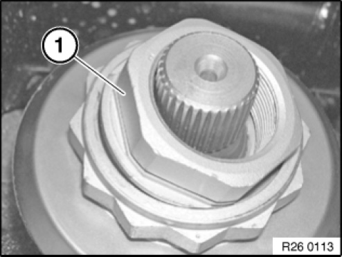</div><br><br><br><br><br>Remove insert nut (1).<br><br>Installation note:<br>Insert nut must be replaced.<br><br><br><div class='oxe-image'>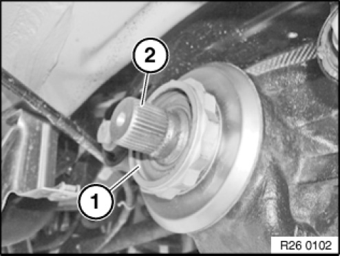</div><br><br><br><br><br>Before installing propeller shaft: Clean insert collar (1) on flange nut and gearing on bevel pinion (2).<br>Fill insert collar (1) with grease.<br>Grease: BMW Service Operating Fluids.<br><br><br><div class='oxe-image'>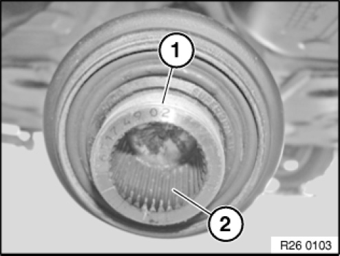</div><br><br><br><br><br>Clean thread (1) of joint hub to remove adhesive residues.<br>Clean hub teeth (2), then coat with grease.<br>Grease: BMW Service Operating Fluids.<br><br><b>IMPORTANT:</b>  Thread of joint hub must not be fouled with grease.<br><br><br><div class='oxe-image'>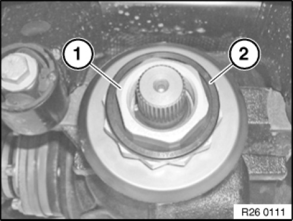</div><br><br><br><br><br>Place flange nut (1) with gasket in insert collar of flange nut.<br>Install retaining clip (2).<br><br><br><div class='oxe-image'></div><br><br><br><br><br><b>IMPORTANT:</b>  Adhere without fail to installation and screw-fastening sequence.<br><br>Installation sequence:<br><span class='indent-2'>&#09;</span>1.<span class='indent-5'>&#09;</span>Join output shaft to transmission<br><span class='indent-2'>&#09;</span>2.<span class='indent-5'>&#09;</span>Join output shaft to rear axle final drive<br><span class='indent-2'>&#09;</span>3.<span class='indent-5'>&#09;</span>Join centre mount<br><br>Screw-fastening sequence:<br><span class='indent-2'>&#09;</span>1.<span class='indent-5'>&#09;</span>Insert nut<br><span class='indent-2'>&#09;</span>2.<span class='indent-5'>&#09;</span>Flexible disc to transmission<br><span class='indent-2'>&#09;</span>3.<span class='indent-5'>&#09;</span>Centre mount<br><br><br><div class='oxe-image'>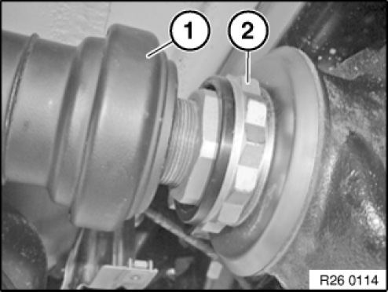</div><br><br><br><br><br>Slide propeller shaft (1) to the limit position onto insert nut and secure.<br>Secure propeller shaft at centre universal joint against turning with a mounting lever.<br><br><b>IMPORTANT:</b><br>The bi-hexagonal flange nut (2) must not be used for bracing.<br>Failure to comply with this instruction may result in serious damage to the rear axle final drive.<br><br>Insert nut must be screwed into place within 5 minutes.<br>Tightening torque 26 11 1AZ.<br><br><br><h3>j����*��:</h3><div class='oxe-image'>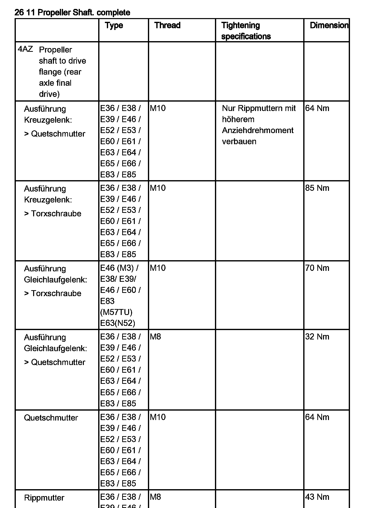</div><br><br><br><h3>I��H�:</h3><div class='oxe-image'>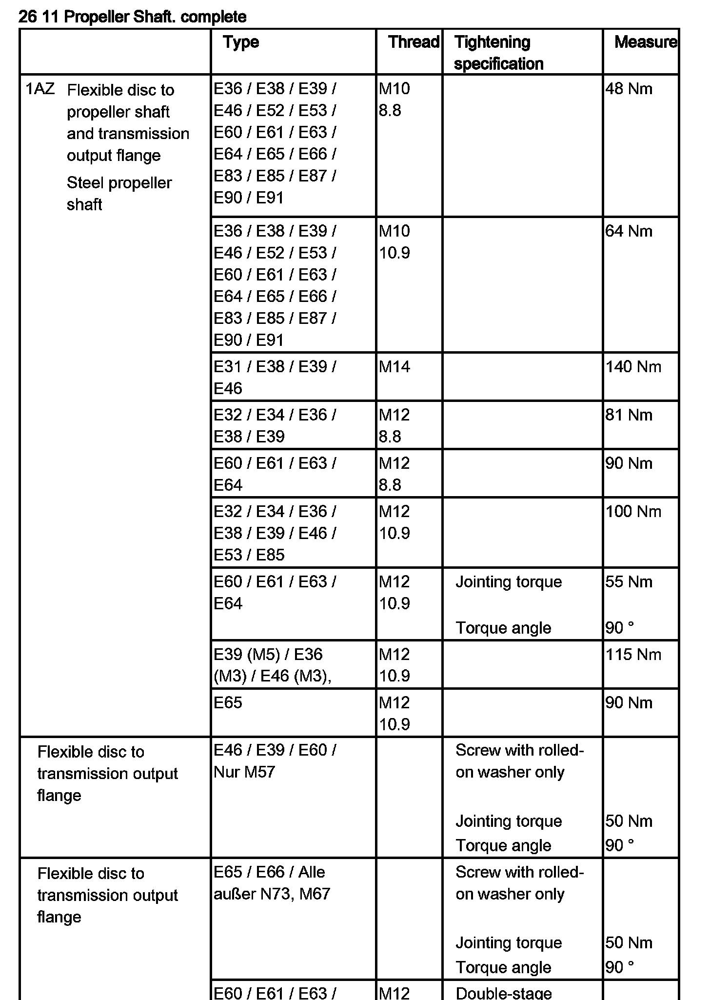</div><br><br><br><div class='oxe-image'>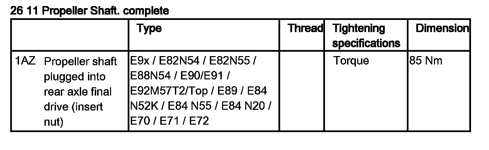</div><br><br><br><br><h3>;������:</h3><div class='oxe-image'>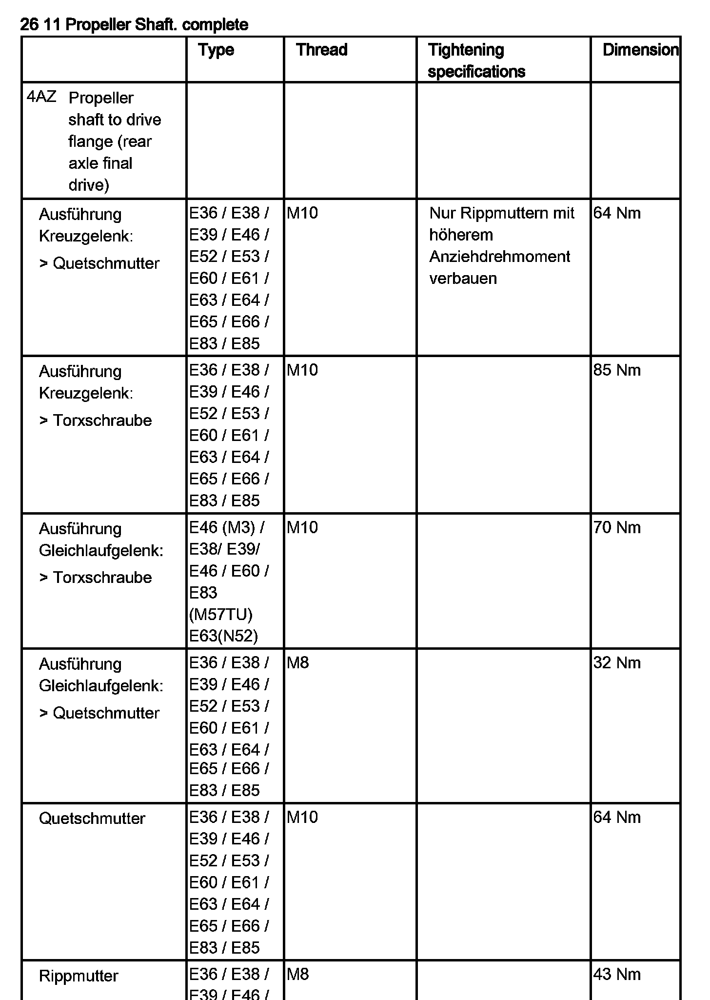</div><br><br><br><h3>kc�!��:</h3><div class='oxe-image'>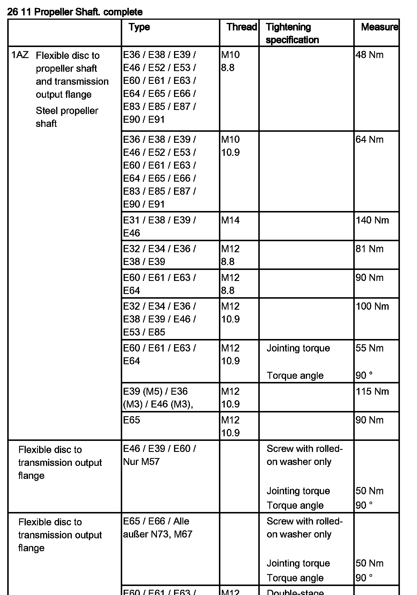</div><br><br><br><div class='oxe-image'>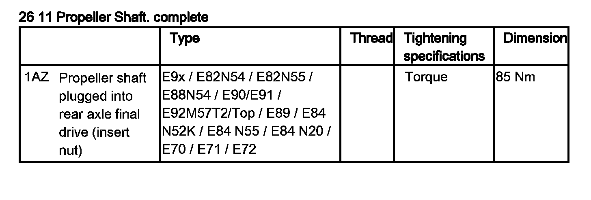</div><br><br><br></div>
<div class="theme-colors footer">
  <i>pro multis</i> · <a href="../about.html">About Operation CHARM</a>
</div>
<script src="../script.js"></script>
</body>
</html>
